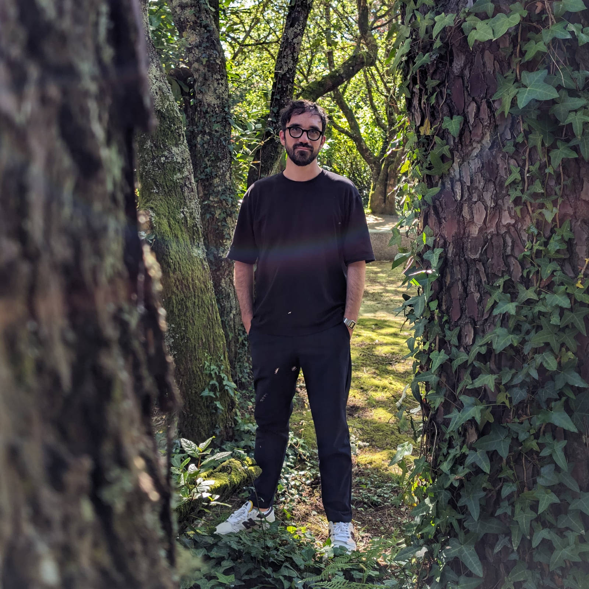

TIM

<Selected Clients>
Netflix Design Studios, Slate+Ash, The New York Times, UPENN, Julia Stoschek Foundation, ZKM Karlsruhe, CCCB Barcelona , Holo Magazine, IBM, Springer Science + Business Media, Stiftung Bauhaus Dessau, DEMO Festival, Mozilla
<2025 Activities>
It’s Nice That – What happens when design ditches big tech?
Curation for Demo Festival
Talk and workshop at Demo Festival
<Education>
Bielefeld University of Applied Sciences
Center of Music and Film Informatics Detmold
IADE Lisbon
Münster School of Design